Creates a simple time-series plot of melatonin concentration before DLMO segmentation or fitting. This is useful for checking timestamp order, the approximate timing of threshold crossings, and whether a chosen threshold is likely to identify the intended melatonin rise.
See also
plot_profile() with mode = "raw" for the underlying plotting
method.
Examples
filename <- system.file("extdata/sample_melatonin_profile.csv", package = "dlmoR")
plot_raw_profile(file_path = filename, threshold = 5)
#> Loading data from file: /private/var/folders/jc/0t013ckx36db6z5ztm52h3vw0000gn/T/RtmpQ4mYk1/temp_libpath84c12765bdc9/dlmoR/extdata/sample_melatonin_profile.csv
#> Creating 'time' column from 'datetime'.
 raw_data <- readr::read_delim(filename, delim = ";")
#> Rows: 19 Columns: 2
#> ── Column specification ────────────────────────────────────────────────────────
#> Delimiter: ";"
#> dbl (1): melatonin
#> dttm (1): datetime
#>
#> ℹ Use `spec()` to retrieve the full column specification for this data.
#> ℹ Specify the column types or set `show_col_types = FALSE` to quiet this message.
plot_raw_profile(data = raw_data)
#> Creating 'time' column from 'datetime'.
raw_data <- readr::read_delim(filename, delim = ";")
#> Rows: 19 Columns: 2
#> ── Column specification ────────────────────────────────────────────────────────
#> Delimiter: ";"
#> dbl (1): melatonin
#> dttm (1): datetime
#>
#> ℹ Use `spec()` to retrieve the full column specification for this data.
#> ℹ Specify the column types or set `show_col_types = FALSE` to quiet this message.
plot_raw_profile(data = raw_data)
#> Creating 'time' column from 'datetime'.
